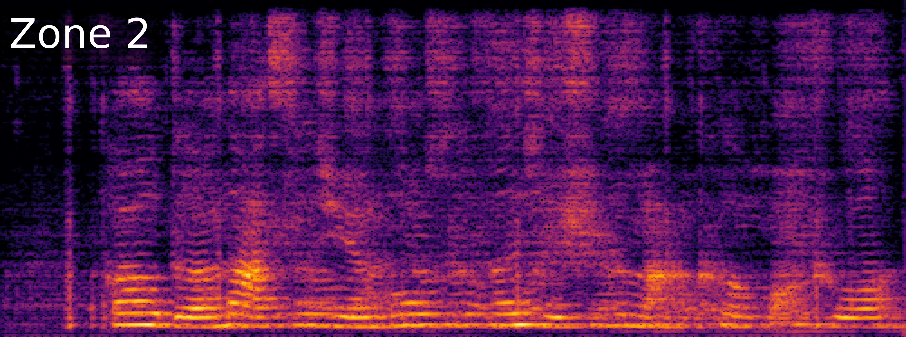
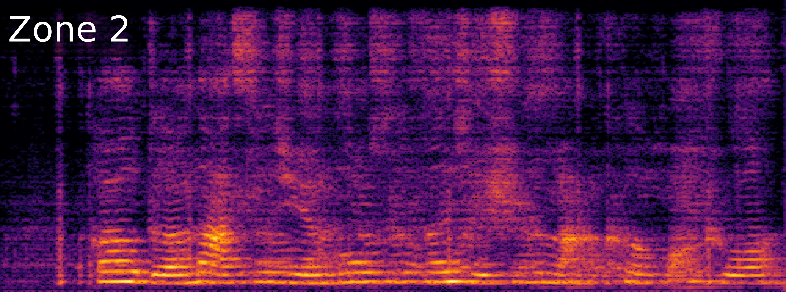
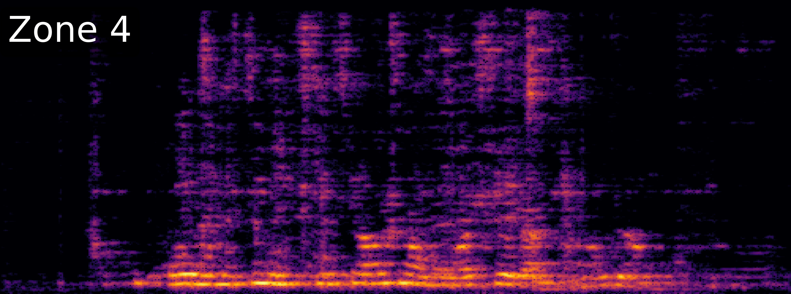
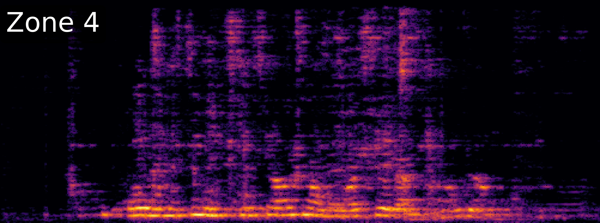

Comparison with Other Advanced Methods
Separated Spectrograms of ZoneSep under Different Configurations
Mixture


Label


ZoneSep


ZoneSep*
(replace SCMs+Mag with IPD+Mag)
ZoneSep*
(replace SC-SI-SDR loss with A-ε-SI-SDR loss)


ZoneSep*
(without post-mask decoder)


 



 
